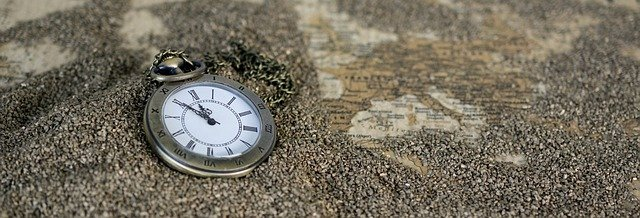

En toda relación funcional, cada una de las dos variables que aparecen en juego tiene un papel distinto. Una variable es la que es objeto de observación y de estudio, y la otra variable es la que expresa e indica los cambios que se producen en la anterior.
Hemos visto gráficas que relacionan los días y la temperatura, los meses y el precio de la gasolina, los segundos y el ritmo cardiaco. Las variables temperatura, precio de la gasolina, ritmo cardiaco indican los cambios que se producen en la variable tiempo medida en días, meses o segundos.
En todos los casos anteriores, el tiempo es la variable objeto de estudio. No siempre ocurre así, pero no mentiríamos si afirmáramos que el tiempo es la variable más independiente que existe.
La temperatura, el precio de la gasolina y el ritmo cardiaco son variables que dependen de la variable tiempo.

Variable dependiente e independiente
|
Recibe el nombre de independiente la variable que es objeto de estudio en una relación funcional. Y llamamos dependiente a la variable cuyos valores dependen del de la variable independiente. |
Cuando expresamos una relación funcional mediante una gráfica en un plano coordenado, la variable independiente se representa en el eje de abscisas, en tanto que la dependiente se hace en el de ordenadas.
Un punto del plano \((x, y)\) pertenecerá a la gráfica de la relación funcional si a la abscisa \(x\) de la variable independiente le corresponde la ordenada \(y\) de la variable dependiente.
Completa

Una empresa dedicada al abastecimiento y saneamiento de aguas, dispone de tres piscinas de tratamiento en una de las estaciones de depuración que tiene en funcionamiento.
La piscina 1 (imagen de la derecha) mide 50 metros de largo, 10 de ancho y 5 de profundidad.
En la escena que aparece a continuación, se aprecia el frente de la piscina. En la gráfica que le acompaña, se puede ver como varían los litros que hay en la piscina (medidos en metros cúbicos) en función de la altura que tiene el agua (medida en metros).
Para iniciar el proceso de llenado debes hacer clic en el control inferior izquierdo de la escena. Este control también te permite detener el llenado en cualquier momento.
Completa los espacios en blanco que aparecen a continuación.